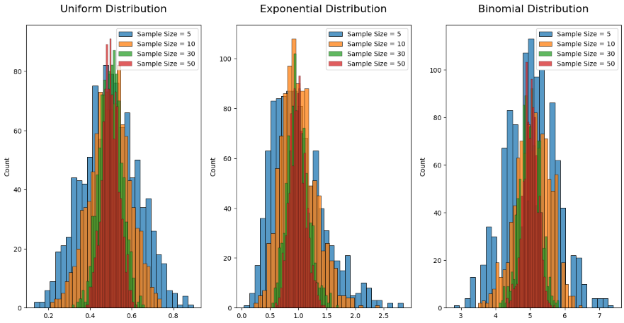

Problem 1
Exploring the Central Limit Theorem through Simulations
Motivation
The Central Limit Theorem (CLT) is a fundamental concept in probability and statistics. It states that the sampling distribution of the sample mean becomes approximately normal as the sample size increases, regardless of the shape of the population distribution.
Formally, if we take samples of size \( n \) from a population with mean \( \mu \) and variance \( \sigma^2 \), the distribution of the sample means \( \bar{X} \) tends toward a normal distribution:
This powerful result allows us to make inferences about populations using the normal distribution—even if the original population is not normal.
Task
1. Simulating Sampling Distributions
- Use different population distributions:
- Uniform distribution
- Exponential distribution
- Binomial distribution
- Create a large population dataset for each.
2. Sampling and Visualization
- Randomly draw samples and compute their means for sample sizes like \( n = 5, 10, 30, 50 \).
- Repeat sampling multiple times to generate the sampling distribution.
- Visualize histograms of sample means and check their convergence to normality.
3. Parameter Exploration
- Explore how the original distribution shape and sample size affect the convergence rate.
- Analyze how population variance \( \sigma^2 \) influences the spread of the sampling distribution (i.e., \( \frac{\sigma^2}{n} \)).
4. Practical Applications
- Estimate unknown population parameters \( \mu \).
- Monitor product quality in manufacturing.
- Make predictions in financial models using expected values.
Deliverables
- Python scripts or notebooks implementing the simulations.
- Plots showing the evolution of sampling distributions toward normality.
- A discussion linking results to theoretical CLT expectations.
Hints and Resources
- Use
NumPyfor number generation andSeaborn/Matplotlibfor plots. - Start with simple distributions like uniform.
- Emphasize the meaning of sample mean \( \bar{X} \) and sample variance.
Python Code


# clt_simulation.py
# Central Limit Theorem Simulation
# Author: [Your Name]
import numpy as np
import matplotlib.pyplot as plt
import seaborn as sns
sns.set(style="whitegrid")
sample_sizes = [5, 10, 30, 50]
population_size = 100000
num_samples = 1000
def generate_population(distribution, size):
if distribution == "uniform":
return np.random.uniform(0, 100, size)
elif distribution == "exponential":
return np.random.exponential(scale=10, size=size)
elif distribution == "binomial":
return np.random.binomial(n=20, p=0.5, size=size)
else:
raise ValueError("Unsupported distribution.")
def simulate_sampling(population, sample_sizes, num_samples):
results = {}
for size in sample_sizes:
means = []
for _ in range(num_samples):
sample = np.random.choice(population, size=size, replace=False)
means.append(np.mean(sample))
results[size] = means
return results
def plot_sampling_distributions(results, distribution_name):
fig, axes = plt.subplots(2, 2, figsize=(12, 8))
axes = axes.flatten()
for idx, size in enumerate(results):
sns.histplot(results[size], kde=True, ax=axes[idx], color="skyblue", stat="density")
axes[idx].set_title(f"{distribution_name.capitalize()} - Sample Size {size}")
axes[idx].set_xlabel("Sample Mean")
axes[idx].set_ylabel("Density")
plt.tight_layout()
plt.show()
def run_simulation():
distributions = ["uniform", "exponential", "binomial"]
for dist in distributions:
print(f"\nüîç Simulating {dist.capitalize()} Distribution...")
population = generate_population(dist, population_size)
results = simulate_sampling(population, sample_sizes, num_samples)
plot_sampling_distributions(results, dist)
if __name__ == "__main__":
run_simulation()
Results & Discussion
Observation of Sampling Distributions
After simulating samples from different distributions (Uniform, Exponential, Binomial), we observe the following:
- Uniform Distribution: Converges to a normal distribution very quickly, even with small sample sizes like \( n = 10 \).
- Exponential Distribution: Skewed heavily at the start, but the distribution of sample means becomes noticeably symmetric as \( n \) increases to 30 and 50.
- Binomial Distribution: With parameters \( n = 20 \), \( p = 0.5 \), already fairly symmetric, so convergence is very fast.
This directly demonstrates the Central Limit Theorem in action. As sample size increases, the distribution of the sample mean becomes more bell-shaped and centered around the population mean \( \mu \), regardless of the population’s original shape.
Theoretical Validation
According to the CLT, for large \( n \), the sampling distribution of the sample mean \( \bar{X} \) will be approximately:
Our simulation confirms this:
- The mean of the sample means is close to \( \mu \)
- The spread of the sample means decreases with increasing \( n \), matching the formula \( \frac{\sigma^2}{n} \)
- The histograms show clear convergence toward a normal shape
Practical Applications of the Central Limit Theorem
1. Estimating Population Parameters
In practice, we often use sample means to estimate unknown population means \( \mu \). CLT justifies this by ensuring that with a sufficiently large sample size, we can assume normality in the sampling distribution, making confidence intervals and hypothesis tests valid.
2. Quality Control in Manufacturing
In industrial settings, averages of product measurements (e.g., lengths, weights) are used to monitor production. Thanks to CLT, these averages can be treated as normally distributed, which simplifies control charts and decision making.
3. Financial Modeling and Risk Management
Financial analysts often rely on expected returns from portfolios. Even if daily returns are not normally distributed, their averages over long periods tend to be normally distributed due to the CLT. This is critical in options pricing, risk forecasts, and economic modeling.
Conclusion
The Central Limit Theorem is not just a theoretical concept — it has real power in data science, industry, and finance. Through this project, we've visually and numerically validated how it operates and why it’s such a cornerstone of statistical inference.
This assignment helped solidify understanding by:
- Simulating from various distributions
- Observing convergence of sampling distributions
- Exploring how sample size and distribution shape influence results
- Applying statistical reasoning to real-world scenarios